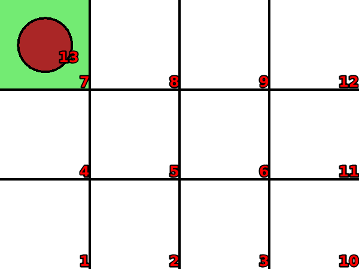
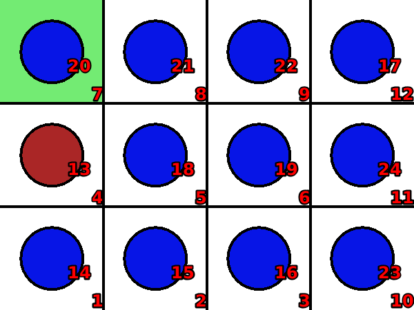

Traveling-salesman
Language: Teaching Script Entire Dialog
World states:
init-tourrc.world
final-tourrc.world
Primitive concepts used
Object types:
|
locations, blocks |
Colors:
|
red, blue
|
| Spatial relations: |
on, below, between |
| Functions: |
count of, less than |
Teaching Dialog (Rosie in bold)
TEACHER: The name of the puzzle is traveling-salesman.
Please setup the puzzle.
TEACHER: Load init-tourrc.

Ok.
TEACHER: Ok.
Please describe the actions, goals, and failure conditions.
TEACHER: The name of the action is move-salesman.
What are the conditions of the action.
TEACHER: If a clear location is adjacent to a red block then you can move the red block onto the clear location and move a clear available blue block onto a location that was below the red block.
Please describe the meaning of 'available' in this context.
TEACHER: If a block is not on a location then it is available.
Ok, I've learned the meaning of 'available' for this context.
Please describe the meaning of 'clear' in this context.
TEACHER: If a location is not below an object then it is clear.
Ok, I've learned the meaning of 'clear' for this context.
Please describe the meaning of 'adjacent' in this context.
TEACHER: If a location is next to an object but it is not diagonal with the object then it is adjacent to the object.
Ok, I've learned the meaning of 'adjacent' for this context.
I've learned the action.
TEACHER: The solution has eleven steps.
Ok.
TEACHER: Load final-tourrc.

Ok.
TEACHER: The goal is that all locations are covered and a red block is adjacent to a green location.
Please setup the goal state.
TEACHER: Ok.
Please describe the meaning of 'covered' in this context.
TEACHER: If a location is below an object then it is covered.
Ok, I've learned the meaning of 'covered' for this context.
I've learned the goal.
TEACHER: Done.
I've learned traveling-salesman. Should I try to solve the puzzle?
TEACHER: No.
Ok.